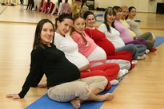
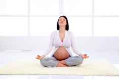

Подготовка к родам
Большей частью женщины, особенно те из них, кто ждет ребенка впервые, воспринимают свое состояние исключительно как период, в течение которого они вынашивают беременность. Однако это время необходимо еще для того, чтобы хорошо подготовиться к очень важной, завершающей этот период стадии – родам.
Что означает – подготовиться к родам? Вы можете возразить: в организме женщины происходят изменения, не подвластные ее воле. И ребенок, и тело женщины независимо от ее желания готовятся к родам, которые затем происходят также самопроизвольно. Но, согласитесь, такое отношение к ним как к чему-то неуправляемому, стихийному почти всегда становится причиной страха. К тому же женщины, как правило, уверены в опасности и чрезвычайной болезненности родов. Боязнь возникает еще и потому, что беременная часто и представления не имеет о тех процессах, которые происходят в ней во время родов. А страх – всегда плохой помощник.
Если женщина, испугавшись родовой боли, начинает кричать, делать лишние движения, напрягаться, у нее повышается тонус мышц нижнего отдела матки. А значит, медленнее раскрывается шейка матки, а это затягивает роды, делает каждую схватку более болезненной.
Нужно заранее избавиться от боязни. Для этого следует приобрести уверенность в своих силах, благополучном исходе родов. Этому и служит подготовка к ним.
Еще в 20-30-годы XX века были предприняты попытки предотвратить возникновение порочного круга в развитии болевых ощущений: страх – напряжение – боль – еще больший страх – увеличение напряжения – усиление боли. Или, по крайней мере, ослабить боли во время схваток. Работы прежде всего отечественных ученых, медиков Франции и Великобритании позволили разработать систему психопрофилактической подготовки беременных к родам.
Суть этой системы заключается в следующем. Беременная получает знания о том, что происходит в ее организме в каждом периоде родов, при каждой схватке, каждой потуге. И у нее исчезает страх перед неизвестным. Ей становится понятным и то, почему во время родов нужно вести себя так, а не иначе. Женщина учится правильно дышать во время схваток и при потугах. Она осваивает приемы аутотренинга, самомассажа и обезболивания схваток.
Когда будущая мать приобретет все необходимые знания и навыки, она сумеет контролировать, а значит, облегчить роды. И они из стихийного превратятся в управляемый процесс. По статистическим данным, около 35 % женщин, прошедших психопрофилактическую подготовку, могут рожать безболезненно. У остальных 65 % болевые ощущения значительно снижены, и они способны контролировать свое поведение во время схваток.
Роды требуют от будущей мамы больших затрат физических сил. Да и само вынашивание беременности из-за возрастания массы тела и изменений центра его тяжести приводит к увеличению нагрузки на связки, мышцы таза и живота, длинные мышцы спины. А эти мышцы у женщин, как правило, не разработаны. Поэтому в подготовку к родам входят и комплексы физических упражнений.
Эти упражнения позволяют постепенно, без напряжения, укрепить мышцы и связки, устранить неприятные ощущения и боли по сторонам живота, обусловленные растяжением связок, боли в пояснице – из-за возросшей нагрузки на поясничный отдел позвоночника, предотвратить уплощение стопы и развитие плоскостопия. И конечно же тренируют те группы мышц, которые принимают активное участие в родах.
Все эти «дисциплины» женщина может усвоить, посещая с 15-16-й недели беременности школу матерей в консультации, где занятия проводит акушер-гинеколог. Если беременная по тем или иным причинам не будет посещать занятия, она может выполнять упражнения самостоятельно.
Нередко женщины, которые до беременности занимались каким-либо из видов спорта – плаванием, конькобежным или лыжным, обращаются к участковому гинекологу с вопросом: можно ли им продолжать занятия? Обычно врач разрешает им заниматься спортом в первые месяцы беременности, но с небольшими нагрузками. И эти рекомендации врача нужно выполнять. Поскольку любое физическое напряжение вызывает приток артериальной крови к работающим мышцам, плод недополучает при этом «полагающиеся» ему питательные вещества и кислород. Он вынужден приспосабливаться к неблагоприятной ситуации. Малыш начинает активно двигаться, у него чаще бьется сердечко, быстрее бежит кровь по сосудам, и в итоге он получает все, что ему нужно.
Однако не следует забывать о том, что адаптационные возможности плода ограничены. Если во время занятий матери спортом условия внутриутробной жизни изменяются в физиологических пределах и плод может приспособиться к новым обстоятельствам, то все в порядке. Считайте, что ваш малыш тренируется вместе с вами и это ему идет на пользу. Но когда напряжение матери оборачивается непосильными нагрузками для плода, это не может не повредить ему.
Поэтому в занятиях спортом беременным важно не переусердствовать. Вам следует, с одной стороны, прислушиваться к своим ощущениям – разминка должна быть вам приятна, а с другой – не забывать советоваться с врачом. Из всех видов спорта исключение делается только для плавания – им можно заниматься в течение всей беременности, но не спеша, в чистой и достаточно теплой воде.